Про нас
Ukraine Support Fondation
Фонд» - громадська організація , заснована У 2022 році командою
волонтерів.. Цiлi фонду назбирати максимальну суму на допомогу ЗСУ
за
мінімальний строк.
Фонд» - громадська організація , заснована У 2022 році командою
волонтерів.. Цiлi фонду назбирати максимальну суму на допомогу ЗСУ
за
мінімальний строк.
ЗАСНОВНИКИ ФОНДУ
-
Олексій Дорошенко
-
Тарас Балінській
-
Джесіка Паркер
-
Теодора Левенко